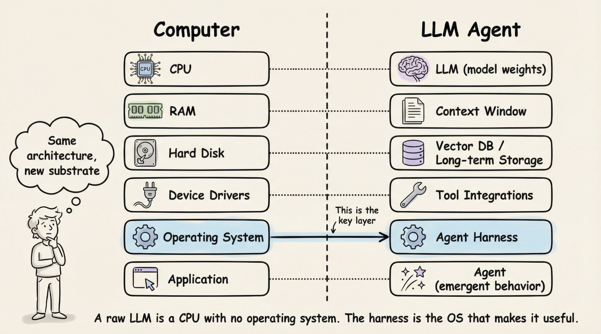
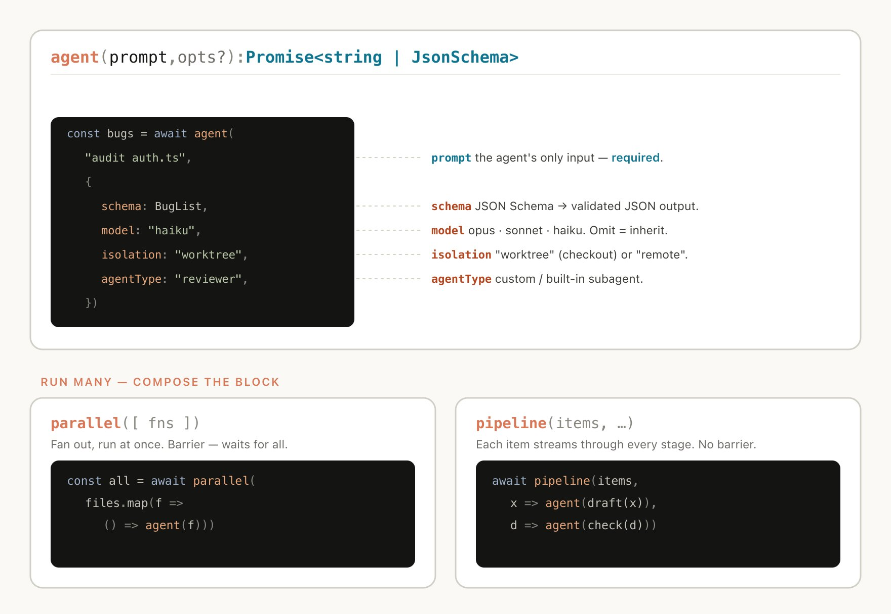

The non-model infrastructure that turns an LLM into a tool-using, stateful, recoverable, and verifiable agent.
The model produces tokens. The harness decides what context the model sees, what tools it can call, how tool results return, when state is compacted, how errors are recovered, and how completion is verified.
| Layer | Scope |
|---|---|
| Prompt engineering | Instructions the model receives |
| Context engineering | Information loaded, withheld, summarized, or retrieved |
| Harness engineering | Tools, loop control, state, memory, guardrails, recovery, and verification |

| Component | Role |
|---|---|
| Orchestration loop | Runs thought/action/observation cycles |
| Tools | Files, shell, search, browser, APIs, MCP, subagents |
| Memory | Persists useful context across sessions |
| Context management | Controls compaction, masking, retrieval, and delegation |
| Error handling | Turns failures into recoverable observations when possible |
| Guardrails | Separates attempted actions from permitted actions |
| Verification | Uses tests, linters, screenshots, judges, and checklists |
Research such as ReAct and Lost in the Middle explains why loop design and context placement matter.
assemble prompt
-> call model
-> classify output
-> validate tool calls
-> execute tools
-> package observations
-> update state/context
-> verify or continueThe loop can be simple. The hard part is everything it coordinates: permissions, schemas, compaction, retries, concurrent reads, serial writes, and termination rules.
Dynamic workflows are task-specific harnesses generated for migrations, deep research, fact checking, sorting, incident triage, evals, and adversarial review.
| Pattern | Use |
|---|---|
| Classify and act | Route items to specialized paths |
| Fan out and synthesize | Split independent subtasks, then merge results |
| Adversarial verification | Review output against a rubric |
| Tournament | Compare competing attempts |
| Loop until done | Continue until a measurable stop condition |

| Decision | Tradeoff |
|---|---|
| Single-agent vs multi-agent | Context preservation vs coordination overhead |
| ReAct vs plan-and-execute | Adaptability vs repeated reasoning cost |
| Thin vs thick harness | Model capability vs deterministic control |
| Permissive vs restrictive tools | Speed vs safety |
| Tests vs LLM judges | Deterministic truth vs semantic review |
Default to one agent, the smallest useful tool set, and a verifier. Add subagents or workflows only where the simpler loop breaks.